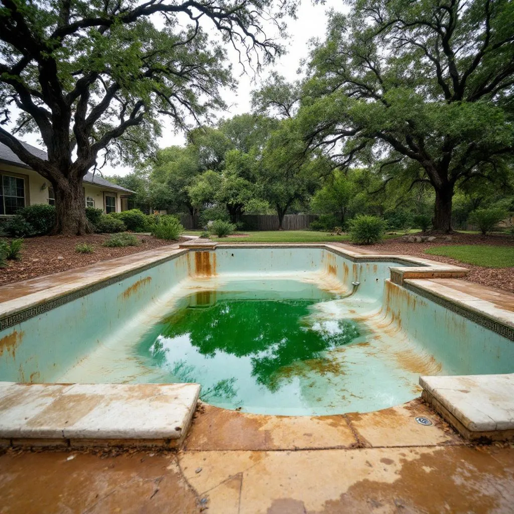
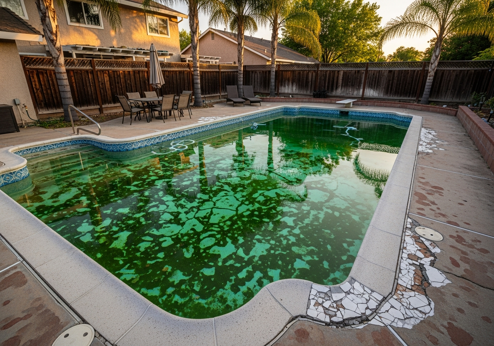
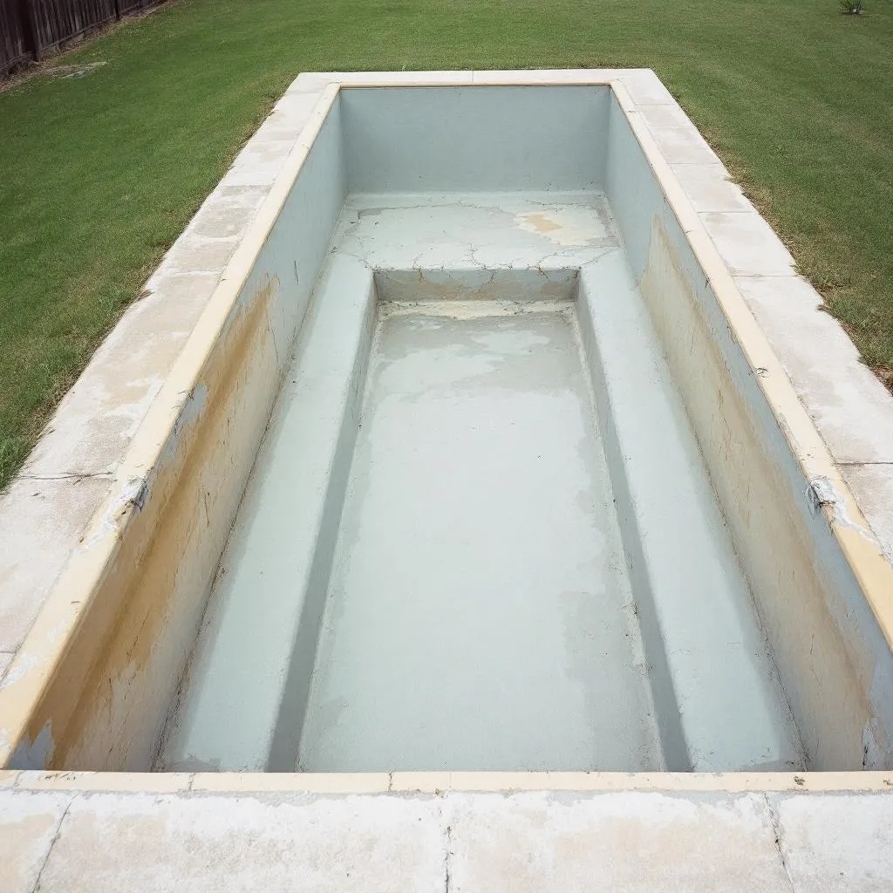
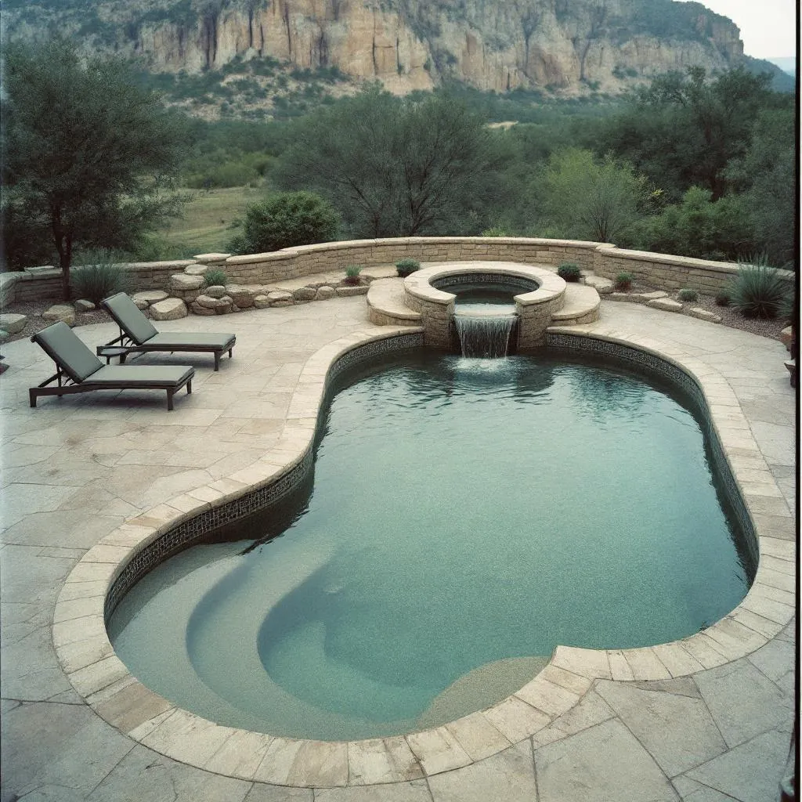

Real transformations from San Antonio pools we've resurfaced
Transformations
See the dramatic difference professional resurfacing makes.


15-year-old plaster with severe staining and roughness transformed into a smooth, ocean-blue PebbleSheen surface.


Major soil movement cracks repaired with epoxy injection, then finished with a sparkling quartz aggregate surface.


Faded and chipping marcite replaced with fresh white plaster. Budget-friendly refresh that looks brand new.


Complete overhaul: new PebbleTec surface, glass mosaic waterline tile, travertine coping, and LED color lighting.
Our Work
A selection of completed pool resurfacing projects across San Antonio.
 Alamo Pool
Alamo Pool